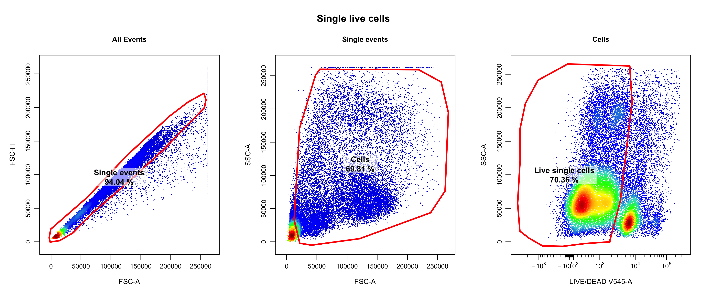

How to Prepare Data for SuperCellCyto
Givanna Putri
how_to_prepare_data.RmdPerforming Quality Control
Prior to creating supercells, it’s crucial to ensure that your dataset has undergone thorough quality control (QC). We want to retain only single, live cells and remove any debris, doublets, or dead cells. Additionally, it is also important to perform compensation to correct for fluorescence spillover (for Flow data) or to adjust for signal overlap or spillover between different metal isotopse (for Cytof data). A well-prepared dataset is key to obtaining reliable supercells from SuperCellCyto.
Several R packages are available for performing QC on cytometry data. Notable among these are PeacoQC, CATALYST, and CytoExploreR. These packages are well maintained and are continuously updated. To make sure that the information we provide do not quickly go out of date, we highly recommend you to consult the packages’ respective vignettes for detailed guidance on how to use them to QC your data.
If you prefer using manual gating to do QC, you can also use FlowJo. For a comprehensive guide on using FlowJo for prepare your data, please read this vignette. The steps taken in that vignette to do QC is perfectly adequate for SuperCellCyto.
In our manuscript, we used CytoExploreR to QC the
Oetjen_bcell flow cytometry data and CATALYST
to QC the Trussart_cytofruv Cytof data.
The specific scripts used can be found in our Github repository:
-
b_cell_identification/gate_flow_data.RforOetjen_bcelldata. -
batch_correction/prepare_data.RforTrussart_cytofruvdata. These scripts were adapted from those used in the CytofRUV manuscript.
For Oetjen_bcell data, we used the following gating strategy post compensation:
- FSC-H and FSC-A to isolate only the single events. (Also check SSC-H vs SSC-A).
- FSC-A and SSC-A to remove debris.
- Live/Dead and SSC-A to isolate live cells.
The following is the resulting single live cells manually gated for
the Oetjen_bcell data.
knitr::include_graphics("figures/oetjen_bcell_single_live_cells.png", error = FALSE)
After completing the QC process, you will have clean data in either CSV or FCS file formats. The next section will guide you on how to load these files and proceed with preparing your data for SuperCellCyto.
Preparing FCS/CSV files for SuperCellCyto
To use SuperCellCyto, your input data must be formatted as a data.table
object. Briefly, data.table is an enhanced version of R
native data.frame object. It is a package that offers fast
processing of large data.frame.
Cell ID column
Additionally, each cell in your data.table must also
have a unique identifier. The purpose of this ID is to allow SuperCell
to uniquely identify each cell in the dataset. It will come in super
handy later when/if we need to work out which cells belong to which
supercells, i.e., when we need to expand the supercells out. Generally,
we will need to create this ID ourselves. Most dataset won’t come with
this ID already embedded in.
For this tutorial, we will call the column that denotes the cell ID cell_id. For your own dataset, you can name this column however you like, e.g., id, cell_identity, etc. Just make sure you note the column name as we will need it later to create supercells.
Sample column
Lastly, each cell in the data.table object must also be
associated with a sample. This information must be stored in a column
that we later on pass to the function that creates supercells.
Generally, sample here typically refers to the biological sample the
cell came from.
To create supercells, it is necessary to have this column in our dataset. This is to ensure that each supercell will only have cells from exactly one sample. In most cases, it does not make sense to mix cells from different biological samples in one supercell. Additionally (not as important), SuperCellCyto can process multiple samples in parallel, and for it to do that, it needs to know the sample information.
But what if we only have 1 biological sample in our dataset? It does not matter. We still need to have the sample column in our dataset. The only difference is that this column will only have 1 unique value.
You can name the column however we like, e.g., Samp, Cell_Samp, etc. For this tutorial, we will call the column sample. Just make sure you note the column name as we will need it later to create supercells.
Preparing CSV files
Loading CSV files into a data.table object is
straightforward. We can use the fread function from the
data.table package.
Here’s how to install it:
install.packages("data.table")For this example, let’s load two CSV files containing subsampled data
from the Levine_32dim dataset we used in SuperCellCyto
manuscript. Each file represents a sample (H1 and H2), with the sample
name appended to the file name:
library(data.table)
csv_files <- c("data/Levine_32dim_H1_sub.csv", "data/Levine_32dim_H2_sub.csv")
samples <- c("H1", "H2")
dat <- lapply(seq(1: length(samples)), function(i) {
csv_file <- csv_files[i]
sample <- samples[i]
dat_a_sample <- fread(csv_file)
dat_a_sample$sample <- sample
return(dat_a_sample)
})
dat <- rbindlist(dat)
dat[, cell_id := paste0("Cell_", seq(1: nrow(dat)))]
head(dat)
#> Time Cell_length DNA1 DNA2 CD45RA CD133 CD19
#> 1: 307428 27 169.91125 262.3192 2.338830 -0.15333985 -0.2056334
#> 2: 80712 13 50.91230 181.1320 2.129232 3.35638666 -0.1013980
#> 3: 111390 16 126.93545 269.4199 1.613719 -0.07193317 0.1116483
#> 4: 14088 31 142.67317 283.4645 4.100985 0.09366111 19.4974289
#> 5: 284190 53 98.28069 187.2090 4.289627 0.56254190 12.2265682
#> 6: 481997 35 112.29634 162.4416 6.089430 0.01665318 -0.1943735
#> CD22 CD11b CD4 CD8 CD34 Flt3
#> 1: -0.19720075 32.13040161 0.78105438 -0.071934469 1.53498471 0.84833205
#> 2: 3.05647945 14.23928833 0.53373063 -0.007943562 -0.09401329 -0.13234507
#> 3: -0.07421356 2.20701027 9.75063324 -0.034266483 0.53720337 -0.05749827
#> 4: 5.07963181 -0.07880223 0.05995781 0.009049721 -0.19206744 3.36803102
#> 5: 10.81768703 1.82670891 1.30010796 -0.187664956 2.05419374 2.72891521
#> 6: 1.43817198 5.79350042 0.64789140 54.004249573 0.28843120 1.01514077
#> CD20 CXCR4 CD235ab CD45 CD123 CD321 CD14
#> 1: -0.08676258 3.488938 0.82301176 313.8038 0.30909532 46.484669 0.05072345
#> 2: -0.04217101 1.364644 -0.13094166 207.2459 1.76594567 22.532978 -0.19256826
#> 3: 0.09777651 3.880993 2.00220966 750.4200 -0.06809702 9.515447 -0.05956535
#> 4: 0.64118648 2.911314 -0.08744399 169.4798 1.25776207 9.218699 1.09861076
#> 5: 15.34162998 9.303430 6.34135485 751.0563 0.05031190 10.463912 1.11993504
#> 6: 3.84020925 3.520693 2.93023992 868.4937 -0.04488884 19.107010 0.62120903
#> CD33 CD47 CD11c CD7 CD15 CD16
#> 1: 2.09802437 20.96871 20.76318550 -0.007966662 0.7279212 -0.03067662
#> 2: 7.35230541 27.49848 15.13398170 -0.087256350 0.7187206 0.41139653
#> 3: -0.16046160 53.51268 -0.19080050 1.044164538 2.1075230 -0.14510959
#> 4: 0.18614264 55.07846 -0.07061907 0.948859751 1.2470639 1.12294865
#> 5: 0.15872155 40.63973 4.64010382 -0.195279136 4.5712810 -0.10192144
#> 6: -0.09832545 29.65497 6.15759659 12.104630470 0.5801706 -0.11606000
#> CD44 CD38 CD13 CD3 CD61 CD117 CD49d
#> 1: 95.71002 5.1124768 5.1056433 0.5827813 -0.1684093 -0.02967962 6.557199
#> 2: 185.51929 7.4784145 0.3580886 1.8861074 1.9233229 -0.14122920 1.088500
#> 3: 33.95839 0.6161237 0.3045178 462.1258240 0.7625037 -0.03500306 5.997476
#> 4: 32.46420 249.4612885 1.2526705 0.7302832 3.2274778 -0.18526185 8.533935
#> 5: 98.09428 43.5352974 2.8327518 0.1868679 2.1032026 0.01776284 12.400333
#> 6: 65.91293 2.0126576 1.2817017 390.3737793 2.4605207 0.33154550 5.214703
#> HLA-DR CD64 CD41 Viability file_number event_number
#> 1: 112.467545 6.9157209 0.083808646 1.7268630 94 257088
#> 2: 12.206795 30.7242870 7.753727913 3.7120194 94 80655
#> 3: -0.046793 -0.1739236 -0.080375805 0.7011412 94 116394
#> 4: 8.965122 0.3391838 -0.005531122 0.2978864 94 5618
#> 5: 174.952667 0.4361930 1.834125400 13.2743187 94 241699
#> 6: 0.648035 -0.1803290 0.389085352 0.4543665 94 363564
#> sample cell_id
#> 1: H1 Cell_1
#> 2: H1 Cell_2
#> 3: H1 Cell_3
#> 4: H1 Cell_4
#> 5: H1 Cell_5
#> 6: H1 Cell_6Let’s break down what we have done:
- We specify the location of the csv files in
csv_filesvector and their corresponding sample names insamplesvector.data/Levine_32dim_H1_sub.csvbelongs to sample H1 whiledata/Levine_32dim_H2_sub.csvbelongs to sample H2. - We use
lapplyto simultaneously iterate over each element in thecsv_filesandsamplesvector. For each csv file and the corresponding sample, we read the csv file into the variabledat_a_sampleusingfreadfunction. We then assign the sample id in a new column calledsample. As a result, we get a listdatcontaining 2data.tableobjects, 1 object per csv file. - We use
rbindlistfunction from thedata.tablepackage to merge list into onedata.tableobject. - We create a new column
cell_idwhich gives each cell a unique id such asCell_1,Cell_2, etc.
Preparing FCS files
FCS files, commonly used in cytometry, require specific handling. The
Spectre package
contains functions to import FCS files as data.table
object.
You can install Spectre using the remotes package:
install.packages("remotes")
remotes::install_github("immunedynamics/Spectre")Let’s load two small FCS files for the Anti-PD1 data downloadable from FlowRepository.
library(Spectre)
dat_list <- read.files(file.loc = "data", file.type = ".fcs")Spectre’s read.files reads FCS files into a list of
data.table objects, one for each file. For each
data.table object, it will also add a column
FileName denoting the name of the file the cell come
from.
For this list to be useable by SuperCellCyto, we will need to merge
them into one data.table object and add sample information
and cell ID. We can use data.table’s rbindlist
function to merge the list into one data.table object.
The FCS files belong to two different patients, patient 9 and 15. We
shall use that as the sample ID. To make sure that we correctly map the
filenames to the patients, we will first create a new
data.table object containing the mapping of FileName and
the sample name, and then using merge.data.table to add
them into our data.table object.
We will also to create a new column cell_id which gives
each cell a unique id such as Cell_1, Cell_2,
etc.
dat_cytof <- rbindlist(dat_list)
sample_info <- data.table(
sample = c("patient9", "patient15"),
filename = c("Data23_Panel3_base_NR4_Patient9", "Data23_Panel3_base_R5_Patient15")
)
dat_with_sample_info <- merge.data.table(
x = dat_cytof,
y = sample_info,
by.x = "FileName",
by.y = "filename"
)
dat_with_sample_info[, cell_id := paste0("Cell_", seq(1: nrow(dat_with_sample_info)))]With CSV and FCS files loaded as data.table objects, the next step is to transform the data appropriately for SuperCellCyto.
Data Transformation
Before using SuperCellCyto, it’s essential to apply appropriate data transformations. These transformations are crucial for accurate analysis, as explained in this article on data transformation.
Note: If you have completed the QC process as outlined here and have CSV files exported from FlowJo, you can proceed directly to the next vignette on how to create supercells. For more details on different file types (FCS, CSV scale, and CSV channel value), refer to this guide.
A common method for data transformation in cytometry is the arcsinh transformation, an inverse hyperbolic arcsinh transformation. The transformation requires specifying a cofactor, which affects the representation of the low-end data. Typically, a cofactor of 5 is used for Cytof data and 150 for Flow data. This vignette will focus on the transformation process rather than cofactor selection. For more in-depth information on choosing a cofactor, read this detailed article.
We’ll use the Levine_32dim dataset loaded earlier from
CSV files.
First, we need to select the markers to be transformed. Usually, all markers should be transformed for SuperCellCyto. However, you can choose to exclude specific markers if needed:
markers_to_transform <- c("CD45RA","CD133","CD19","CD22","CD11b","CD4",
"CD8","CD34","Flt3","CD20","CXCR4","CD235ab",
"CD45","CD123","CD321","CD14","CD33","CD47","CD11c",
"CD7","CD15","CD16","CD44","CD38","CD13","CD3","CD61",
"CD117","CD49d","HLA-DR","CD64","CD41")For transformation, we’ll use a cofactor of 5 and apply the arcsinh transformation using the Spectre package. If Spectre isn’t installed, use:
install.packages("remotes")
remotes::install_github("immunedynamics/Spectre")Perform the transformation:
dat <- do.asinh(dat, markers_to_transform, cofactor = 5)After transformation, new columns with “_asinh” appended indicate the transformed markers.
Alternatively, if you don’t want to use Spectre, you can also use the
inbuilt asinh function in R to do the transformation:
cofactor <- 5
# Do the transformation
dat_asinh <- asinh(dat[, markers_to_transform, with = FALSE] / cofactor)
head(dat_asinh)
#> CD45RA CD133 CD19 CD22 CD11b CD4
#> 1: 0.4521968 -0.030663164 -0.04111509 -0.03942993 2.55951176 0.15558245
#> 2: 0.4139249 0.628977340 -0.02027821 0.57848688 1.76920432 0.10654443
#> 3: 0.3173883 -0.014386137 0.02232781 -0.01484217 0.42819644 1.42110634
#> 4: 0.7483619 0.018731126 2.07004151 0.89259051 -0.01575979 0.01199128
#> 5: 0.7772642 0.112272365 1.62672741 1.51446768 0.35766705 0.25717724
#> 6: 1.0273733 0.003330631 -0.03886491 0.28380900 0.98926269 0.12921838
#> CD8 CD34 Flt3 CD20 CXCR4 CD235ab
#> 1: -0.014386398 0.30236841 0.16886275 -0.017351646 0.6508532 0.16386798
#> 2: -0.001588712 -0.01880155 -0.02646592 -0.008434102 0.2696492 -0.02618534
#> 3: -0.006853243 0.10723503 -0.01149940 0.019554056 0.7139745 0.39044561
#> 4: 0.001809943 -0.03840405 0.63090991 0.127888398 0.5535560 -0.01748791
#> 5: -0.037524184 0.40007994 0.52178220 1.839834412 1.3795382 1.05895614
#> 6: 3.074908161 0.05765429 0.20165859 0.707518206 0.6560537 0.55682438
#> CD45 CD123 CD321 CD14 CD33 CD47 CD11c
#> 1: 4.832541 0.061779758 2.925712 0.01014452 0.40817588 2.140661 2.13108274
#> 2: 4.417761 0.346230147 2.210777 -0.03850414 1.17826549 2.406005 1.82688632
#> 3: 5.704353 -0.013618983 1.399436 -0.01191279 -0.03208681 3.065803 -0.03815085
#> 4: 4.216660 0.248972250 1.371487 0.21799154 0.03721993 3.094522 -0.01412334
#> 5: 5.705201 0.010062211 1.484375 0.22215516 0.03173898 2.792218 0.82955004
#> 6: 5.850478 -0.008977647 2.050461 0.12392437 -0.01966382 2.480371 1.03599597
#> CD7 CD15 CD16 CD44 CD38 CD13 CD3
#> 1: -0.001593332 0.1450748 -0.006135286 3.645714 0.8971911 0.89623517 0.11629394
#> 2: -0.017450384 0.1432536 0.082186751 4.307050 1.1923661 0.07155664 0.36880389
#> 3: 0.207344037 0.4099270 -0.029017846 2.614221 0.1229150 0.06086597 5.21957573
#> 4: 0.188650968 0.2468967 0.222743270 2.569725 4.6031134 0.24798459 0.14554227
#> 5: -0.039045905 0.8194260 -0.020382876 3.670287 2.8605627 0.53993131 0.03736488
#> 6: 1.617456647 0.1157753 -0.023209917 3.273479 0.3923848 0.25361287 5.05085497
#> CD61 CD117 CD49d HLA-DR CD64 CD41
#> 1: -0.03367549 -0.005935889 1.0854069 3.806867702 1.12814560 0.016760944
#> 2: 0.37575938 -0.028242085 0.2160160 1.625229446 2.51531881 1.222586140
#> 3: 0.15191575 -0.007000555 1.0156499 -0.009358463 -0.03477772 -0.016074469
#> 4: 0.60744371 -0.037043896 1.3042564 1.347048087 0.06778483 -0.001106224
#> 5: 0.40913068 0.003552560 1.6398025 4.248428862 0.08712833 0.359059949
#> 6: 0.47413843 0.066260604 0.9114135 0.129246858 -0.03605798 0.077738747Do note, if you use the inbuilt asinh function, you will
need to re-attach the cell id and sample column.
dat_asinh$sample <- dat$sample
dat_asinh$cell_id <- dat$cell_id
head(dat_asinh)
#> CD45RA CD133 CD19 CD22 CD11b CD4
#> 1: 0.4521968 -0.030663164 -0.04111509 -0.03942993 2.55951176 0.15558245
#> 2: 0.4139249 0.628977340 -0.02027821 0.57848688 1.76920432 0.10654443
#> 3: 0.3173883 -0.014386137 0.02232781 -0.01484217 0.42819644 1.42110634
#> 4: 0.7483619 0.018731126 2.07004151 0.89259051 -0.01575979 0.01199128
#> 5: 0.7772642 0.112272365 1.62672741 1.51446768 0.35766705 0.25717724
#> 6: 1.0273733 0.003330631 -0.03886491 0.28380900 0.98926269 0.12921838
#> CD8 CD34 Flt3 CD20 CXCR4 CD235ab
#> 1: -0.014386398 0.30236841 0.16886275 -0.017351646 0.6508532 0.16386798
#> 2: -0.001588712 -0.01880155 -0.02646592 -0.008434102 0.2696492 -0.02618534
#> 3: -0.006853243 0.10723503 -0.01149940 0.019554056 0.7139745 0.39044561
#> 4: 0.001809943 -0.03840405 0.63090991 0.127888398 0.5535560 -0.01748791
#> 5: -0.037524184 0.40007994 0.52178220 1.839834412 1.3795382 1.05895614
#> 6: 3.074908161 0.05765429 0.20165859 0.707518206 0.6560537 0.55682438
#> CD45 CD123 CD321 CD14 CD33 CD47 CD11c
#> 1: 4.832541 0.061779758 2.925712 0.01014452 0.40817588 2.140661 2.13108274
#> 2: 4.417761 0.346230147 2.210777 -0.03850414 1.17826549 2.406005 1.82688632
#> 3: 5.704353 -0.013618983 1.399436 -0.01191279 -0.03208681 3.065803 -0.03815085
#> 4: 4.216660 0.248972250 1.371487 0.21799154 0.03721993 3.094522 -0.01412334
#> 5: 5.705201 0.010062211 1.484375 0.22215516 0.03173898 2.792218 0.82955004
#> 6: 5.850478 -0.008977647 2.050461 0.12392437 -0.01966382 2.480371 1.03599597
#> CD7 CD15 CD16 CD44 CD38 CD13 CD3
#> 1: -0.001593332 0.1450748 -0.006135286 3.645714 0.8971911 0.89623517 0.11629394
#> 2: -0.017450384 0.1432536 0.082186751 4.307050 1.1923661 0.07155664 0.36880389
#> 3: 0.207344037 0.4099270 -0.029017846 2.614221 0.1229150 0.06086597 5.21957573
#> 4: 0.188650968 0.2468967 0.222743270 2.569725 4.6031134 0.24798459 0.14554227
#> 5: -0.039045905 0.8194260 -0.020382876 3.670287 2.8605627 0.53993131 0.03736488
#> 6: 1.617456647 0.1157753 -0.023209917 3.273479 0.3923848 0.25361287 5.05085497
#> CD61 CD117 CD49d HLA-DR CD64 CD41
#> 1: -0.03367549 -0.005935889 1.0854069 3.806867702 1.12814560 0.016760944
#> 2: 0.37575938 -0.028242085 0.2160160 1.625229446 2.51531881 1.222586140
#> 3: 0.15191575 -0.007000555 1.0156499 -0.009358463 -0.03477772 -0.016074469
#> 4: 0.60744371 -0.037043896 1.3042564 1.347048087 0.06778483 -0.001106224
#> 5: 0.40913068 0.003552560 1.6398025 4.248428862 0.08712833 0.359059949
#> 6: 0.47413843 0.066260604 0.9114135 0.129246858 -0.03605798 0.077738747
#> sample cell_id
#> 1: H1 Cell_1
#> 2: H1 Cell_2
#> 3: H1 Cell_3
#> 4: H1 Cell_4
#> 5: H1 Cell_5
#> 6: H1 Cell_6With your data now transformed, you’re ready to create supercells using SuperCellCyto. Please refer to How to create supercells vignette for detailed instructions.
Session information
sessionInfo()
#> R version 4.3.2 (2023-10-31)
#> Platform: x86_64-pc-linux-gnu (64-bit)
#> Running under: Ubuntu 22.04.3 LTS
#>
#> Matrix products: default
#> BLAS: /usr/lib/x86_64-linux-gnu/openblas-pthread/libblas.so.3
#> LAPACK: /usr/lib/x86_64-linux-gnu/openblas-pthread/libopenblasp-r0.3.20.so; LAPACK version 3.10.0
#>
#> locale:
#> [1] LC_CTYPE=C.UTF-8 LC_NUMERIC=C LC_TIME=C.UTF-8
#> [4] LC_COLLATE=C.UTF-8 LC_MONETARY=C.UTF-8 LC_MESSAGES=C.UTF-8
#> [7] LC_PAPER=C.UTF-8 LC_NAME=C LC_ADDRESS=C
#> [10] LC_TELEPHONE=C LC_MEASUREMENT=C.UTF-8 LC_IDENTIFICATION=C
#>
#> time zone: UTC
#> tzcode source: system (glibc)
#>
#> attached base packages:
#> [1] stats graphics grDevices utils datasets methods base
#>
#> other attached packages:
#> [1] data.table_1.14.10
#>
#> loaded via a namespace (and not attached):
#> [1] vctrs_0.6.5 cli_3.6.2 knitr_1.45 rlang_1.1.3
#> [5] xfun_0.41 highr_0.10 stringi_1.8.3 png_0.1-8
#> [9] purrr_1.0.2 textshaping_0.3.7 jsonlite_1.8.8 glue_1.7.0
#> [13] htmltools_0.5.7 ragg_1.2.7 sass_0.4.8 rmarkdown_2.25
#> [17] evaluate_0.23 jquerylib_0.1.4 fastmap_1.1.1 yaml_2.3.8
#> [21] lifecycle_1.0.4 memoise_2.0.1 stringr_1.5.1 compiler_4.3.2
#> [25] fs_1.6.3 systemfonts_1.0.5 digest_0.6.34 R6_2.5.1
#> [29] magrittr_2.0.3 bslib_0.6.1 tools_4.3.2 pkgdown_2.0.7
#> [33] cachem_1.0.8 desc_1.4.3